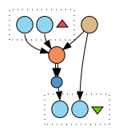

Source object
<> #accepts #SourceObject.
Parameter
<> #accepts #Parameter.
<> #accepts
[ a #PredefinedParameterValue ;
#parameterDescription "no compression" ;
#parameterValue "none"
] .
<> #accepts
[ a #PredefinedParameterValue ;
#parameterDescription "CCITT Group 4" ;
#parameterValue "Group4"
] .
<> #accepts
[ a #PredefinedParameterValue ;
#parameterDescription "run length encoding" ;
#parameterValue "RLE"
] .
Status
<> #provides #Status.
Target object
<> #provides #TargetObject.
Imagemagick
<> #requiresInstallation
[ a #Installation ;
#hasEnvironment #Debian ;
#hasSourceConfiguration
[ a #DpkgConfiguration ;
#installsDpkgs "imagemagick" ;
#requiresAptSource "deb http://scape.keep.pt/apt stable main"
] ;
#dependsOn
[ a #Dependency ;
skos#prefLabel "imagemagick" ;
purl#dependencyVersion "5" ;
foaf#page <http://www.imagemagick.org> ;
cc#license <http://opensource.org/licenses/Apache-2.0>
]
] .
 Workflow
<> #fits #MigrationAction .
<> #migrates
[ a #MigrationPath ;
#sourceMimetype "image/*" ;
#targetMimetype "image/tiff" ;
] . Workflow
Workflow